Actualités GTA 6
Toutes les infos classées par thème et par date. Filtre par catégorie ci-dessous.
Ce qu'on sait déjà, en résumé
Mis à jour le 03 Oct. 2026 · actualisé régulièrement- Le 29 septembre 2026, Game Informer a dévoilé un dossier de 14 pages : carte deux fois plus grande que GTA V, météo « localisée et persistante », plus de 170 espèces animales et nouveau système de Heat pour la police.
- The Goodtime State – Vice City Collection : un coffret de onze objets à 399,99 $, précommandable chez Rockstar, expédié le 19 novembre 2026 (le jeu est vendu séparément).
- Le procès opposant Rockstar à une trentaine d'anciens salariés licenciés se tient à Glasgow depuis le 10 septembre 2026, jusqu'au 16 octobre environ.
- Le 27 août 2026, Rockstar a diffusé « An Extended Look », 26 minutes de gameplay inédit — voir l'article dédié ci-dessous.
- La sortie est fixée au jeudi 19 novembre 2026, confirmée par Rockstar Games.
- Le jeu a déjà été reporté deux fois : initialement prévu en 2025, puis au 26 mai 2026, avant ce dernier report.
- La sortie est confirmée exclusivement sur PS5 et Xbox Series X|S ; aucune date n'est annoncée pour une version PC.
- Précommandes ouvertes depuis le 25 juin 2026 : 79,99 $ (Standard) / 99,99 $ (Ultimate).
- Le jeu se déroule dans l'État fictif de Leonida : Vice City, Leonida Keys, Grassrivers, Port Gellhorn, Mount Kalaga et Ambrosia.
- Deux protagonistes jouables confirmés : Jason Duval et Lucia Caminos, avec changement de personnage façon GTA V.
- Le préchargement du jeu sera possible dès le 12 novembre 2026, une semaine avant la sortie.
- L'histoire sera racontée en chapitres, une première pour la série GTA, inspirée de Red Dead Redemption 2.
- Le système de recherche remonte au maximum classique de six étoiles, avec un « profil criminel » qui réagit au comportement du joueur.
- Deux manettes DualSense collector Vice City (84,99 $) sont en précommande depuis le 10 septembre 2026, pour une sortie le 19 novembre 2026.
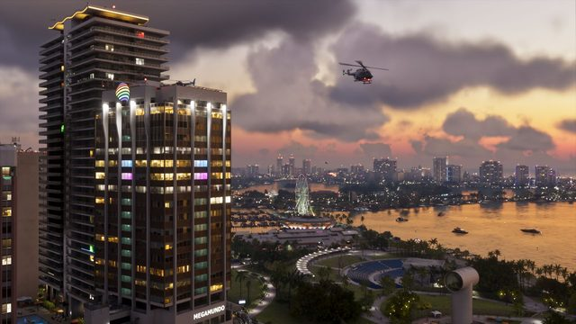
© Rockstar GamesGame Informer : ce que révèle le dossier de couverture
Carte deux fois plus grande que GTA V, météo localisée et persistante, plus de 170 espèces animales et système de Heat pour la police : l'essentiel du dossier de 14 pages.
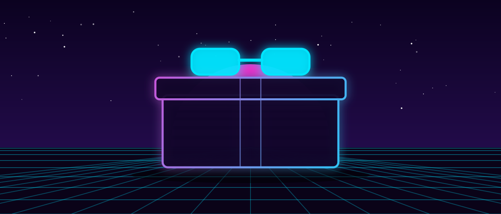
Illustration VCNThe Goodtime State : une collection collector à 399,99 $
Rockstar propose un coffret de onze objets (figurine Macca the Gator, lunettes Oakley, casquette New Era…) expédié le 19 novembre 2026. Le jeu est vendu séparément.
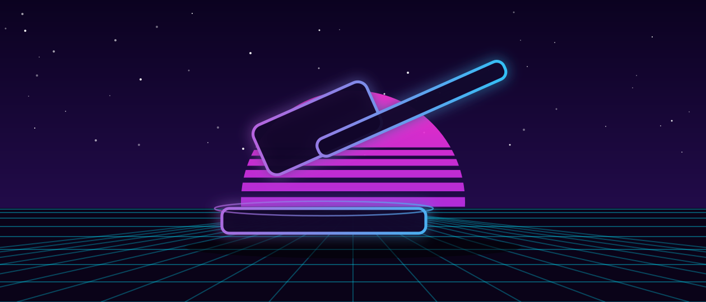
Illustration VCNProcès de Glasgow : Rockstar face à ses anciens développeurs
Depuis le 10 septembre 2026, un tribunal du travail juge le litige entre Rockstar et une trentaine d'anciens salariés licenciés fin 2025, jusqu'au 16 octobre environ.
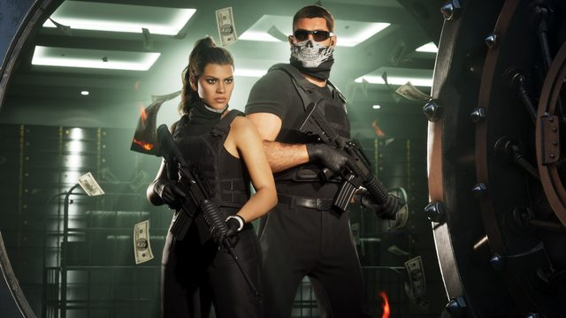
© Rockstar GamesExtended Look : 26 minutes de gameplay dévoilées
Rockstar a diffusé le 27 août 2026 une présentation de 26 minutes de gameplay inédit, d'abord sur Netflix puis en accès libre sur YouTube. Braquages, poursuites, changement de personnage en pleine action : le premier vrai aperçu du jeu en mouvement.
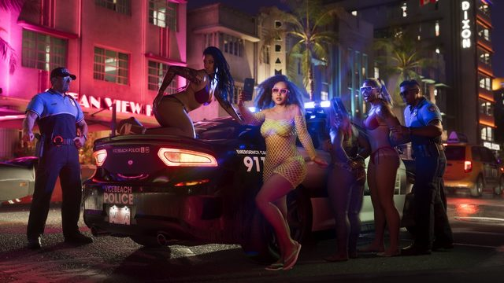
© Rockstar GamesRecherche à 6 étoiles et « profil criminel » confirmés
L'Extended Look confirme le retour du maximum classique de six étoiles, ainsi qu'un système de profil criminel inspiré du système d'honneur de Red Dead Redemption 2.
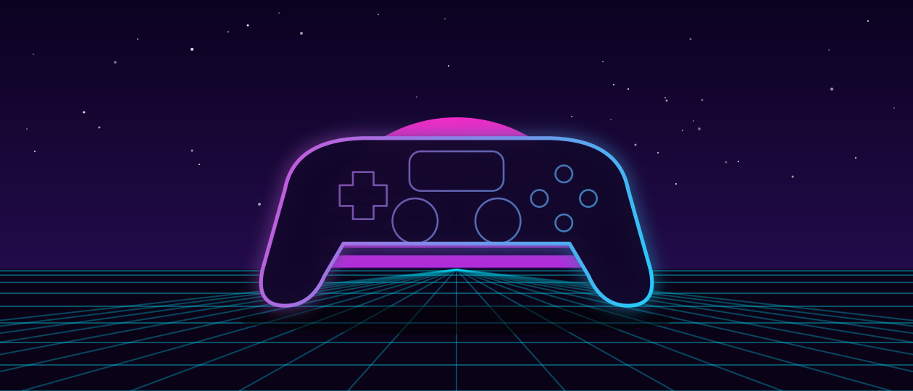
Illustration VCNDeux manettes DualSense collector Vice City chez Sony
Sony a dévoilé deux DualSense en édition limitée (84,99 $), en précommande depuis le 10 septembre 2026, pour une sortie le 19 novembre 2026 aux côtés du jeu.
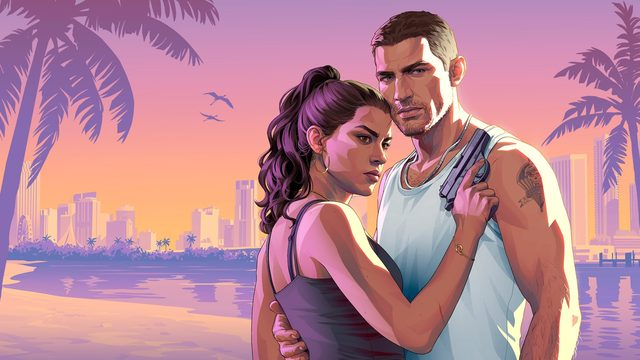
© Rockstar GamesGTA 6 fixé au 19 novembre 2026
Rockstar Games a confirmé que Grand Theft Auto VI sortira le jeudi 19 novembre 2026. Il s'agit du deuxième report du jeu, initialement attendu en 2025 puis au 26 mai 2026.
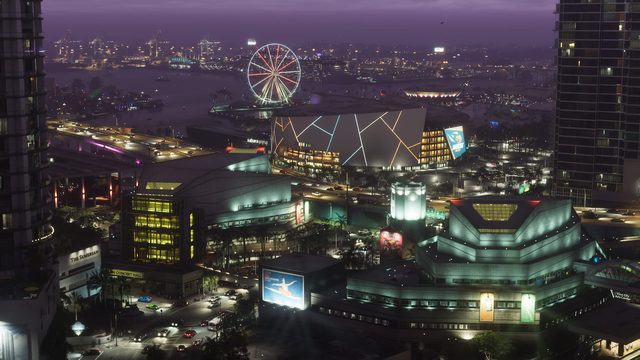
© Rockstar GamesSortie confirmée sur PS5 et Xbox Series X|S
Aucune date n'a été annoncée pour une version PC. En l'absence d'indication contraire de Rockstar, les joueurs PC doivent s'attendre à patienter après la sortie console.
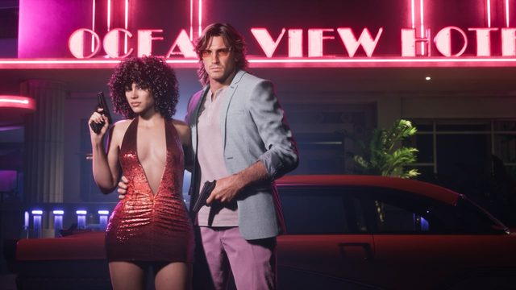
© Rockstar GamesPrécommandes ouvertes : 79,99 $ / 99,99 $
Les précommandes ont ouvert le 25 juin 2026 : édition Standard à 79,99 $, édition Ultimate à 99,99 $. La version physique sera fournie sous forme de code en boîte plutôt qu'un disque.
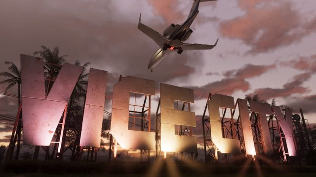
© Rockstar GamesLa carte se situe dans l'État de Leonida
Rockstar a nommé officiellement six régions : Vice City, Leonida Keys, Grassrivers, Mount Kalaga, Port Gellhorn et Ambrosia — la carte la plus vaste de l'histoire de la licence.
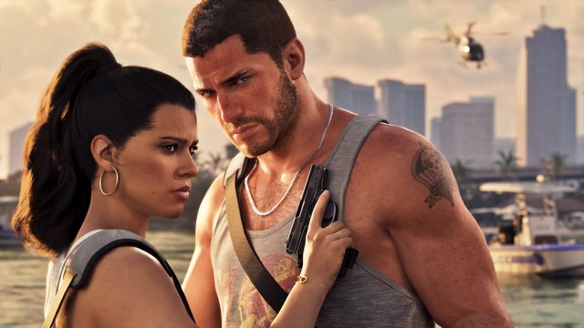
© Rockstar GamesJason et Lucia, les deux protagonistes jouables
Lucia Caminos devient la première protagoniste principale féminine d'un GTA numéroté, aux côtés de Jason Duval. Le changement de personnage fonctionne comme dans GTA V, y compris pendant certaines missions.
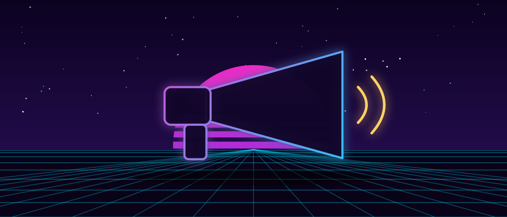
Illustration VCNUne grève chez Rockstar Games n'est pas exclue
Le syndicat IWGB a déposé le 30 juin 2026 une demande officielle de reconnaissance auprès de Rockstar, après plus de 30 licenciements au Royaume-Uni et au Canada fin 2025. Une grève reste conditionnée à un refus de négocier.
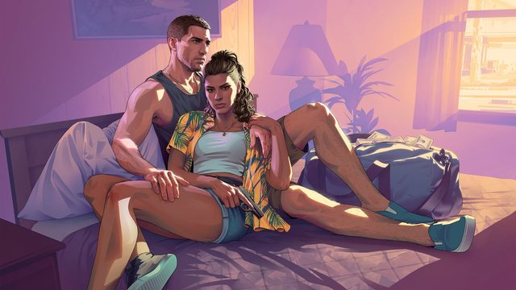
© Rockstar GamesL'histoire sera racontée en chapitres
Une première pour la série GTA : la description officielle de l'édition Ultimate évoque des récompenses "débloquées à chaque chapitre", une structure narrative inspirée de Red Dead Redemption 2.
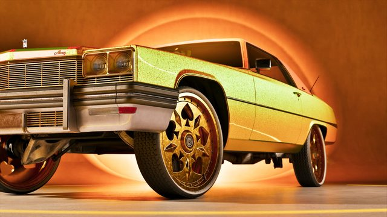
© Rockstar GamesCinq boutiques réservées à l'édition Ultimate
Personnalisation véhicule, salon de coiffure, streetwear, tatouages et garage tout-terrain : l'édition Ultimate (99,99 $) déverrouille des boutiques inaccessibles avec l'édition Standard.
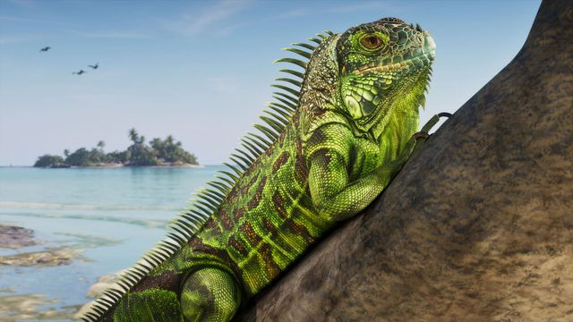
© Rockstar GamesUn clin d'œil discret à Tommy Vercetti repéré
Dans le deuxième trailer, un iguane peint en arrière-plan reprendrait les couleurs de la chemise emblématique de Tommy Vercetti dans GTA Vice City (2002) — un easter egg repéré par la communauté.
D'autres informations (prochaine bande-annonce, personnages secondaires, détails du gameplay) circulent mais n'ont pas encore été suffisamment vérifiées pour être publiées ici — elles seront ajoutées au fur et à mesure de leur confirmation.